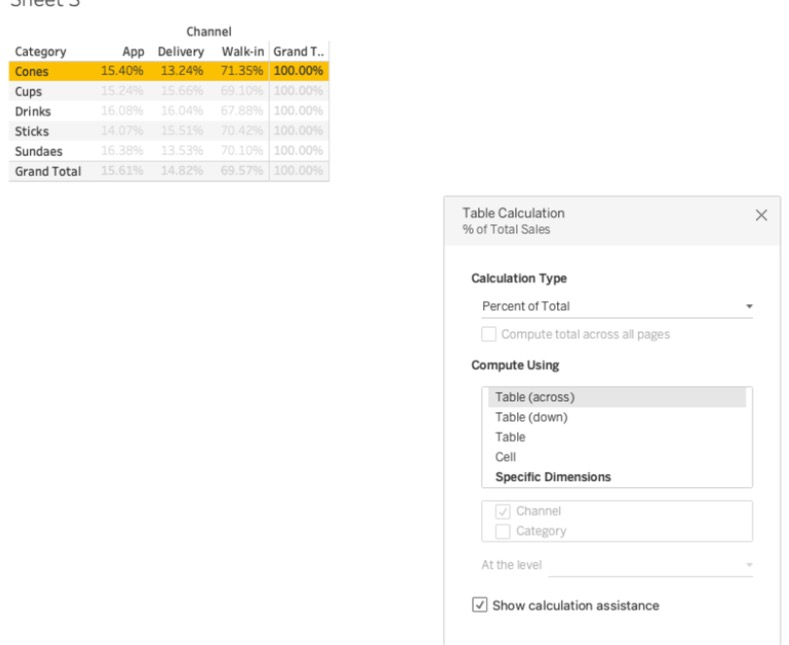
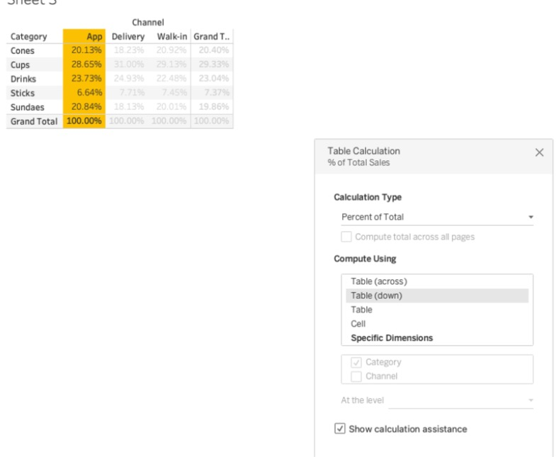

?teacher=1 בכתובת הדף: מה לומר, איפה לעצור ומה לבדוק לפני שממשיכים.בונים במודול הזה אתם בונים על Scoop & Go חמישה גיליונות: סכום מצטבר של המכירות, שינוי מחודש לחודש, דירוג הסניפים לפי רווח, ממוצע נע של שלושה חודשים, ואחוז מהסך הכל לכל קטגוריה בתוך כל אזור. בסוף מרכיבים כרטיס KPI שמראה את החודש האחרון מול החודש שלפניו.
בדרך תבינו מה זה חישוב טבלה, איך Tableau מחליט לאן ללכת (Compute Using), ולמה מספר יכול להשתנות כשמוסיפים מסנן. לכל תרגיל יש תוצאה צפויה מחושבת מהקובץ, כדי שתדעו אם הצלחתם.
מה להכין: את הקובץ scoop_sales_2024_2025.csv (יש גם xlsx) טעון ב-Tableau Public כמו במודול 2. כדאי לדעת להפוך תאריך לחודש רציף (ירוק), כמו במודול 4, ולכתוב שדה מחושב פשוט, כמו במודול 8.
הכל כאן עובד ב-Tableau Public. אם אתם עובדים בדפדפן (web authoring) התפריטים דומים. אם פקודה חסרה שם, עברו לאפליקציה של Tableau Public.
מה זה חישוב טבלה
דנה, מנהלת Scoop & Go, שואלת שאלה פשוטה: ״מתי עברנו 100,000 במכירות מאז ינואר 2024?״ בגרף שלכם יש עמוד לכל חודש. אין שום עמודה שאומרת ״עד עכשיו״. בואו נבנה אותה.
| חודש | מכירות החודש | מה דנה רוצה: סך הכל עד החודש הזה |
|---|---|---|
| ינואר 2024 | 4,139.3 | 4,139.3 |
| פברואר 2024 | 4,276.8 | 8,416.1 |
| מרץ 2024 | 5,990.2 | 14,406.3 |
| אפריל 2024 | 7,168.4 | 21,574.7 |
שימו לב למה שחשוב כאן: העמודה השלישית לא קיימת בקובץ. היא נולדת רק אחרי ש-Tableau כבר סיכם את 6,575 שורות ההזמנה ל-24 מספרים, אחד לכל חודש. החישוב רואה רק את 24 המספרים האלה.
- הקובץ של Scoop & Go: 6,575 שורות הזמנה, ובהן אין עמודה של ״עד עכשיו״.
- קודם Tableau מקבץ את השורות לפי מה שבתצוגה. כאן: חודש אחד לכל נקודה, ובסך הכל 24 מספרים. זו התצוגה.
- רק אחרי זה רץ חישוב הטבלה. הוא לוקח את 24 המספרים ומחשב מהם עמודה חדשה (כאן, סכום מצטבר).
- כיוון שהחישוב עובד על מה שבתצוגה, כל שינוי בתצוגה משנה את הקלט שלו, ולכן גם את התוצאה.
איפה חישוב טבלה נמצא ביחס לשדות מחושבים
במודול 8 כתבתם שדות מחושבים. הנה שלושה סוגים של חישוב, ומתי כל אחד רץ:
| סוג | מתי רץ | דוגמה על Scoop & Go |
|---|---|---|
| שדה מחושב ברמת שורה | על כל שורת הזמנה, לפני הקיבוץ | [Sales] - [Cost] |
| שדה מחושב מקובץ (aggregate) | על הקבוצה, בזמן הקיבוץ | SUM([Profit]) / SUM([Sales]) |
| חישוב טבלה | אחרי הקיבוץ, על המספרים שבתצוגה | RUNNING_SUM(SUM([Sales])) |
חישוב טבלה הוא הדרך ב-Tableau לענות על שאלות שבהן סימן אחד תלוי בסימנים אחרים: ״כמה עד עכשיו?״, ״כמה יותר מהחודש הקודם?״, ״איזה מקום?״. בכל השאלות האלה צריך להסתכל על השכנים, ושורת הזמנה אחת לא יודעת מי השכנים שלה.
והמחיר: התוצאה מושפעת מכל מה שמשנה את התצוגה. זה הנושא של סעיפים 4, 5 ו-9.
איך מזהים חישוב טבלה על המסך
פיל שהוא חישוב טבלה מקבל סימן משולש קטן (Δ) בצד. הנה שני פילים של אותו שדה, לפני ואחרי:
Sales → SUM(Sales) Δ
(זו הדמיה סכמטית של הפיל. בתוכנה המשולש מופיע בפינה של הפיל הירוק.)
Tables
Marks
- חלונית השדות (Data) בגרסה הנוכחית: הכותרת היא
Tables. הממדים למעלה, קו דק, והמדדים מתחתיו. אין כותרות Dimensions ו-Measures. - הפיל הירוק ב-Columns: חודש רציף, 24 נקודות על הציר.
- הפיל ב-Rows עם המשולש (Δ): סכום מצטבר, לא סכום חודשי.
- הקו רק עולה, והנקודה האחרונה שלו שווה לסך כל המכירות, 236,820.9.
תרגיל A: סכום מצטבר של מכירות. כל צעד כולל את הסיבה שלו, ובסוף יש תוצאה צפויה.
- פתחו גיליון חדש (
Sheet 1) כשהקובץscoop_sales_2024_2025.csvטעון. למה: כל התרגילים במודול הזה עובדים על הקובץ הזה. - גררו את
Order DateאלColumns. לחצו על החץ של הפיל, בחרוMonthמהקבוצה השנייה ברשימה (זו שמציגה חודש עם שנה, בתפריט כתוב שם למשלMay 2015), ואז שוב על החץ ובחרוContinuous. הפיל צריך להיות ירוק. למה: חודש רציף נותן ציר זמן אמיתי של 24 חודשים. אם זה לא ברור, חזרו למודול 4. - גררו את
SalesאלRows. למה: כך נקבל את המכירות של כל חודש. תוצאה צפויה: קו עם 24 נקודות, ובשורת המצב בתחתית החלון כתוב24 marks. השיא הוא אוגוסט 2025 עם 23,259.9, והנקודה הראשונה היא ינואר 2024 עם 4,139.3 (העמדת העכבר מראה את זה בחלון הקופץ; Tableau עשוי לעגל לפי העיצוב). - לחצו ימנית על הפיל
SUM(Sales)ב-Rows, בחרוQuick Table CalculationואזRunning Total. למה: זו הדרך המהירה להפוך את הסכום החודשי לסכום מצטבר. - לחצו שוב ימנית על הפיל. עכשיו יש בתפריט פריטים חדשים:
Compute Using,Edit Table Calculation...ו-Clear Table Calculation. פתחו אתCompute Usingוודאו שמסומןTable (across). למה: כאן אתם אומרים ל-Tableau לאן ללכת. כאן ״לאורך הציר״ הוא ההליכה על החודשים. - העמידו עכבר על כמה נקודות.
תוצאה צפויה: הקו רק עולה. בנקודה האחרונה (דצמבר 2025) הערך הוא 236,820.9, וזה בדיוק הסכום של כל עמודת Sales בקובץ. חודש מרץ 2024 מראה 14,406.3. הסכום המצטבר עבר 100,000 לראשונה בנובמבר 2024 (שם הערך הוא 102,097.6; באוקטובר 2024 הוא עוד 97,117.7). זו התשובה לדנה.
בדיקה עצמית: הנקודה האחרונה של סכום מצטבר חייבת להיות שווה לסכום הכולל. אם לא, משהו בתצוגה סינן נתונים.
מתי Tableau מחשב חישוב טבלה, ביחס לקיבוץ של הנתונים?
חישובי הטבלה המהירים
בתרגיל A כבר השתמשתם באחד מהם. ב-Tableau יש אחד עשר חישובי טבלה מוכנים. אתם לא כותבים נוסחה: לוחצים ימנית על הפיל ובוחרים.
Quick Table Calculation ואז Running Total על SUM(Sales).| השם בתפריט | מה הוא עושה (בעברית פשוטה) |
|---|---|
Running Total | סכום של כל הסימנים עד הסימן הנוכחי |
Difference | ההפרש בין הסימן לסימן אחר, ברירת המחדל היא הסימן הקודם |
Percent Difference | ההפרש הזה כאחוז מהסימן הקודם |
Percent of Total | כמה אחוז הסימן הוא מסך כל הסימנים |
Rank | המקום של הסימן בדירוג, מהגדול לקטן |
Percentile | המקום בדירוג כאחוז: 0% לנמוך ביותר ו-100% לגבוה ביותר |
Moving Average | ממוצע של הסימן הנוכחי וכמה סימנים שלפניו (חלון שזז) |
YTD Total | סכום מצטבר שמתחיל מחדש בתחילת כל שנה (YTD = מתחילת השנה) |
Compound Growth Rate | קצב צמיחה קבוע לכל תקופה שמוביל מהערך הראשון לערך הנוכחי |
Year Over Year Growth | הצמיחה לעומת אותה תקופה בשנה שעברה |
YTD Growth | הצמיחה של הסכום מתחילת השנה לעומת אותה נקודה בשנה שעברה |
לפי התיעוד של Tableau, אפשר להפעיל חישוב מהיר רק על מדד שנמצא בתצוגה. ועוד דבר שרואים בתוכנה: ארבעת האחרונים ברשימה (YTD Total, Compound Growth Rate, Year Over Year Growth, YTD Growth) עובדים לפי תאריך. כשאין תאריך בתצוגה הם מופיעים בתפריט באפור, ואי אפשר לבחור אותם. בצילום למטה רואים את זה.
SUM(Sales) שיושב על Text בטבלת טקסט של קטגוריה מול ערוץ. בתפריט הראשי רואים את Add Table Calculation..., את Quick Table Calculation (מסומן) ואת Total using (Automatic). בתת-התפריט אחד עשר החישובים, מ-Running Total ועד YTD Growth. ארבעת האחרונים אפורים, כי בטבלה הזו אין תאריך. בגיליון של תרגיל A, שבו Order Date בתצוגה, הם אמורים להיות פעילים.סייר החישובים: מה כל חישוב עושה על 24 החודשים
בחרו חישוב ותראו את התוצאה על המכירות החודשיות האמיתיות של Scoop & Go. הטבלה והקו מחושבים עכשיו, מהקובץ.
טוען את הנתונים...
תרגיל B: אותו חודש, ארבעה חישובים. נשתמש בגיליון של תרגיל A.
- לחצו ימנית על לשונית הגיליון למטה ובחרו
Duplicate. למה: ככה לא מאבדים את הגיליון של הסכום המצטבר. - בגיליון החדש, לחצו ימנית על הפיל
SUM(Sales),Quick Table CalculationואזDifference. העמידו עכבר על פברואר 2024. - חזרו על זה עם
Percent Difference, אחר כךPercent of Total, אחר כךRank. למה: אותו פיל, ארבע שאלות שונות.
תוצאה צפויה לפברואר 2024 (מכירות 4,276.8):
| החישוב | הערך בפברואר 2024 |
|---|---|
Running Total | 8,416.1 |
Difference | 137.5 |
Percent Difference | 3.32% |
Percent of Total | 1.81% |
Rank | 22 |
הסבר קצר למספרים: הפרש = 4,276.8 פחות 4,139.3 (ינואר). אחוז מהסך = 4,276.8 מתוך 236,820.9. דירוג 22 אומר שיש 21 חודשים עם מכירות גבוהות יותר מ-24. ב-Rank אוגוסט 2025 הוא מקום 1, ופברואר 2025 (4,097.0) הוא מקום 24. Tableau עשוי להציג עיגול שונה, כמו 3.3%, לפי העיצוב.
״התפריט Quick Table Calculation לא מופיע״. זה קורה כשהפיל שלחצתם עליו הוא ממד (כחול) או שהמדד לא בתצוגה. חישוב מהיר עובד רק על מדד שנמצא בתצוגה.
מה עושים: גררו את המדד (למשל Sales) אל Rows או אל Text ואז לחצו ימנית על הפיל שלו שם, לא על השדה בחלונית השדות.
בדוחות מכירות ובדוחות כספיים מקובל להציג ״מצטבר מתחילת שנה״ (YTD) לצד היעד השנתי, כדי לראות בכל חודש אם עומדים בקצב. ממוצע נע משמש כדי להחליק תנודות חדות ולראות מגמה. בעסק עונתי כמו גלידריה, השוואה לאותו חודש בשנה שעברה (Year Over Year) מתאימה יותר מהשוואה לחודש הקודם. עוד על זה בסעיף הבא.
הערך של Percent Difference בפברואר 2024 הוא 3.32%. מה הוא אומר?
Percent of Total, ושם התוצאה 1.81%), ודירוג הוא מספר שלם.Rank? (אוגוסט 2025.) הרשימה של אחד עשר החישובים והסדר שלהם נבדקו בתוכנה (הצילום בסעיף). מה שעוד פתוח: ברירת המחדל של Moving Average, כלומר כמה חודשים קודמים נכנסים לחלון. פתחו לפני השיעור Edit Table Calculation... על ממוצע נע וראו מה מוגדר אצלכם.שינוי מהחודש הקודם ומאותו חודש אשתקד
דנה מסתכלת על 2024 ורואה שבספטמבר המכירות נפלו מאוגוסט. ״כמה ירדנו?״ היא שואלת. ואחר כך: ״ואיך זה מול ספטמבר שעבר?״ אלה שתי שאלות שונות, ו-Tableau עונה על כל אחת בלחיצה.
- ארבעה חודשים של 2024. כל עמודה היא סימן בתצוגה.
- אוגוסט מסתכל אחורה אל יולי: 17,703.1 פחות 16,792.2 הם +910.9, כלומר +5.42% מערך יולי.
- ספטמבר מסתכל אל אוגוסט: 12,206.0 פחות 17,703.1 הם -5,497.1, כלומר -31.05% מערך אוגוסט.
- אוקטובר מסתכל אל ספטמבר: -4,722.5, כלומר -38.69%. ינואר 2024, שאין לפניו חודש, יקבל ערך ריק.
הנה כל 2024 בטבלה. שימו לב לשורה הראשונה: אין לה חודש קודם, ולכן אין הפרש.
| חודש | SUM(Sales) | Difference | Percent Difference |
|---|---|---|---|
| ינואר 2024 | 4,139.3 | ריק | ריק |
| פברואר 2024 | 4,276.8 | +137.5 | +3.32% |
| מרץ 2024 | 5,990.2 | +1,713.4 | +40.06% |
| אפריל 2024 | 7,168.4 | +1,178.2 | +19.67% |
| מאי 2024 | 9,584.1 | +2,415.7 | +33.70% |
| יוני 2024 | 11,774.1 | +2,190.0 | +22.85% |
| יולי 2024 | 16,792.2 | +5,018.1 | +42.62% |
| אוגוסט 2024 | 17,703.1 | +910.9 | +5.42% |
| ספטמבר 2024 | 12,206.0 | -5,497.1 | -31.05% |
| אוקטובר 2024 | 7,483.5 | -4,722.5 | -38.69% |
| נובמבר 2024 | 4,979.9 | -2,503.6 | -33.45% |
| דצמבר 2024 | 4,950.0 | -29.9 | -0.60% |
תרגיל C: שינוי מחודש לחודש, ואחר כך משנה לשנה
- שכפלו את הגיליון של תרגיל A (לחיצה ימנית על הלשונית,
Duplicate). למה: אותו ציר חודשים, חישוב אחר. - לחצו ימנית על הפיל
SUM(Sales),Quick Table CalculationואזPercent Difference. למה: אנחנו רוצים אחוז ולא שקלים כדי להשוות בין חודשים קטנים וגדולים. - לחצו ימנית על הפיל ובחרו
Edit Table Calculation.... נפתח החלוןTable Calculation. ודאו שב-Compute UsingמסומןTable (across), ושבשדהRelative toנבחרPrevious(הקודם). סגרו את החלון ב-X. למה: ככה מוודאים שההשוואה היא לחודש הקודם ולא לראשון. - העמידו עכבר על נקודות. תוצאה צפויה: בינואר 2024 אין נקודה (אין חודש קודם). פברואר 2024: +3.32%. מרץ 2024: +40.06%. יולי 2024: +42.62%. ספטמבר 2024: -31.05%. אוקטובר 2024: -38.69%, הירידה החדה ביותר. יוני 2025: +61.73%, העלייה החדה ביותר. דצמבר 2025: -22.61%.
- עכשיו שכפלו שוב את הגיליון של תרגיל A ובחרו
Year Over Year Growth. למה: כאן כל חודש מושווה לאותו חודש בשנה שלפניה. תוצאה צפויה: כל 12 החודשים של 2024 ריקים (אין שנה שלפניהם). ינואר 2025: +50.90%. פברואר 2025: -4.20%. אוגוסט 2025: +31.39%. דצמבר 2025: +2.95%.
Tableau עשוי להציג פחות ספרות אחרי הנקודה, לפי העיצוב. אם הקו נעלם לגמרי ב-Year Over Year, בדקו שבציר יש תאריך ושהוא רציף.
השנה לעומת השנה: הטבלה של 2025
| חודש | 2025 | אותו חודש ב-2024 | Year Over Year Growth |
|---|---|---|---|
| ינואר 2025 | 6,246.1 | 4,139.3 | +50.90% |
| פברואר 2025 | 4,097.0 | 4,276.8 | -4.20% |
| מרץ 2025 | 6,385.6 | 5,990.2 | +6.60% |
| אפריל 2025 | 7,761.0 | 7,168.4 | +8.27% |
| מאי 2025 | 9,008.4 | 9,584.1 | -6.01% |
| יוני 2025 | 14,569.4 | 11,774.1 | +23.74% |
| יולי 2025 | 21,796.6 | 16,792.2 | +29.80% |
| אוגוסט 2025 | 23,259.9 | 17,703.1 | +31.39% |
| ספטמבר 2025 | 14,440.1 | 12,206.0 | +18.30% |
| אוקטובר 2025 | 10,528.9 | 7,483.5 | +40.69% |
| נובמבר 2025 | 6,584.4 | 4,979.9 | +32.22% |
| דצמבר 2025 | 5,095.9 | 4,950.0 | +2.95% |
שני החישובים עונים על שתי שאלות שונות. מהחודש הקודם עונה על ״מה קרה עכשיו?״ אבל בגלידריה העונה מכריעה: יולי ואוגוסט מוכרים בערך פי ארבעה מינואר, ולכן בשתי השנים כל חודש בין ספטמבר לדצמבר יוצא ירידה וכל חודש בין מרץ לאוגוסט יוצא עלייה, בלי קשר לביצועים. מאותו חודש אשתקד מנטרל את העונה ועונה על ״האם אנחנו צומחים?״.
״הנקודה הראשונה ריקה, זה באג?״ לא. לסימן הראשון אין סימן קודם, ולכן אין לו הפרש. זה נכון גם ל-12 החודשים הראשונים ב-Year Over Year.
גם אחרי מסנן: אם מסננים את ינואר 2024 החוצה, פברואר 2024 הופך לסימן הראשון, והאחוז שלו נעלם. הערך של סימן תלוי בסימנים שנשארו בתצוגה.
ינואר 2025 הוא +26.18% מדצמבר 2024, ו-+50.90% מינואר 2024. דנה רוצה לכתוב בדוח ״הרשת צומחת״. באיזה מספר כדאי לה להשתמש, ולמה?
למה בגלידריה עדיף לבדוק צמיחה עם Year Over Year ולא עם Percent Difference מהחודש הקודם?
Year Over Year Growth והמיקום שלו בתפריט נבדקו בתוכנה. פתוח (התנהגות, לא שם): שעם חודש רציף (ירוק) מופיעים ערכים רק ל-2025. הריצו פעם אחת לפני השיעור. אם אצלכם מופיע משהו אחר, פתחו Edit Table Calculation... וראו מול מה הוא משווה.חלוקה וכיוון: איך Tableau יודע לאן ללכת
דנה מבקשת: ״תראה לי כמה אחוז כל קטגוריה היא מהמכירות באותו אזור.״ אתם שמים טבלה של אזורים וקטגוריות, מפעילים Percent of Total, ומקבלים מספרים. נכון? תלוי אילו מספרים אתם רוצים שיסתכמו ל-100%.
זו הטבלה שלפנינו: מכירות לפי אזור (שורות) וקטגוריה (עמודות), כולל שני החישובים האפשריים:
| SUM(Sales) | Cones | Cups | Drinks | Sticks | Sundaes |
|---|---|---|---|---|---|
| Center | 24,091.1 | 34,914.4 | 28,188.9 | 9,225.3 | 23,985.8 |
| Jerusalem | 7,219.7 | 9,347.2 | 7,971.3 | 2,588.0 | 6,324.6 |
| North | 5,735.7 | 8,560.0 | 6,861.3 | 1,596.4 | 4,635.8 |
| South | 11,270.5 | 16,648.4 | 11,531.8 | 4,033.7 | 12,091.0 |
| Cones | Cups | Drinks | Sticks | Sundaes | |
|---|---|---|---|---|---|
| Center | 20.0% | 29.0% | 23.4% | 7.7% | 19.9% |
| Jerusalem | 21.6% | 27.9% | 23.8% | 7.7% | 18.9% |
| North | 20.9% | 31.3% | 25.1% | 5.8% | 16.9% |
| South | 20.3% | 30.0% | 20.7% | 7.3% | 21.8% |
| Cones | Cups | Drinks | Sticks | Sundaes | |
|---|---|---|---|---|---|
| Center | 49.9% | 50.3% | 51.7% | 52.9% | 51.0% |
| Jerusalem | 14.9% | 13.5% | 14.6% | 14.8% | 13.4% |
| North | 11.9% | 12.3% | 12.6% | 9.2% | 9.9% |
| South | 23.3% | 24.0% | 21.1% | 23.1% | 25.7% |
אותה טבלה, אותו חישוב (Percent of Total), שתי תשובות שונות. ההבדל הוא רק במה שנקרא Compute Using.
Category, החישוב הולך לאורך כל שורה, מקטגוריה לקטגוריה.Category, החלוקה היא Region, ולכן כל אזור הוא רצועה, וכל רצועה מסתכמת ל-100%.Table (across) אומר ״לכו לאורך השורות״.דמיינו את התצוגה מודפסת על דף. שדות החלוקה הם מספריים שחותכות את הדף לרצועות. שדות הכיוון הם חץ שמצויר על כל רצועה ואומר לאן ללכת. כל שדה בתצוגה הוא או מספריים או חץ.
- הטבלה של אזורים וקטגוריות עם מכירות. עוד אין חישוב.
Table (across): החץ הולך לאורך השורה, מקטגוריה לקטגוריה. השדה שנשאר,Region, חותך ל-4 רצועות. החישוב מתחיל מחדש בכל אזור.Table (down): החץ יורד לאורך העמודה, מאזור לאזור.Categoryחותך ל-5 רצועות.Table (across then down): החץ עובר על שורה, יורד לשורה הבאה וממשיך. שני השדות הם כיוון, אין חלוקה, וכל הטבלה היא רצועה אחת.
כל האפשרויות של Compute Using
| האפשרות | הכיוון |
|---|---|
Table (across) | לאורך השורות |
Table (down) | לאורך העמודות |
Table (across then down) ו-Table (down then across) | שני הכיוונים, בסדר שבשם. בטבלה פשוטה (שדה אחד בכל צד) החלון מציג במקומן שורה אחת בשם Table: כל הטבלה היא רצועה אחת |
Pane (down), Pane (across) ועוד | כמו Table, אבל כל בלוק של הטבלה (Pane) לחוד. מופיעות רק כשיש יותר משדה אחד בשורות או בעמודות |
Cell | בתוך כל תא לבד |
Specific Dimensions | אתם מסמנים בדיוק את השדות |
Specific Dimensions: הדרך הבטוחה
עם Specific Dimensions אתם מסמנים בחלון את השדות שרוצים ללכת לאורכם. כל שדה שלא סימנתם חותך את הטבלה. זה הכי ברור, כי השמות כתובים ולא תלויים במקום שבו הפיל עומד.
כלל אצבע: מסמנים = הולכים לאורכו. לא מסמנים = חותך.
החלון האמיתי: Table Calculation
כל ההגדרות האלה יושבות בחלון אחד. פותחים אותו בלחיצה ימנית על פיל שיש עליו חישוב טבלה, ואז Edit Table Calculation.... בראש החלון כתוב Table Calculation ומתחתיו שם החישוב (למשל % of Total Sales). מלמעלה למטה יש בו:
Calculation Type: איזה חישוב (למשלPercent of Total). מתחתיו תיבת סימוןCompute total across all pages. לפי השם, היא נוגעת רק למצב שיש שדה ב-Pages, ולא נשתמש בה כאן.Compute Using: רשימת הכיוונים. בטבלה עם שדה אחד בשורות ושדה אחד בעמודות יש בה חמש שורות:Table (across),Table (down),Table,Cellו-Specific Dimensions.- מתחת לרשימה: השדות של התצוגה עם תיבות סימון. כשבוחרים
Table (across), Tableau מסמן בעצמו את השדה שבעמודות. כך רואים בדיוק מה הכיוון. At the level: רלוונטי רק כשמסמנים יותר משדה אחד. כשמסומן שדה אחד הוא אפור.Show calculation assistance: כשמסמנים אותו, Tableau צובע בצהוב בתצוגה רצועה אחת. זו הדרך הכי מהירה לראות את החלוקה בעיניים.
בונים את החלון בעצמכם: קטגוריה מול ערוץ. טבלה קטנה, שני כיוונים, ומספרים שאפשר לבדוק מול הצילומים שלמטה.
- פתחו גיליון חדש (כפתור
New Worksheetבסרגל הכלים, או Cmd+T במק / Ctrl+T בווינדוס). למה: טבלה נקייה, בלי חישובים קודמים. - גררו את
CategoryאלRowsואתChannelאלColumns. למה: שדה אחד בכל צד, וככה הכי קל לראות כיוון. - גררו את
SalesאלTextבכרטיסMarks. למה: המספרים יופיעו בתוך התאים. תוצאה צפויה: 15 תאים, ובשורת המצב15 marksו-5 rows by 3 columns. למשל Cones ב-App: 7,441 (בקובץ 7,441.1). - בתפריט
AnalysisבחרוTotalsואזShow Row Grand Totals. חזרו לאותו תפריט ובחרוShow Column Grand Totals. למה: שורת סך ועמודת סך יראו לנו איפה יוצא 100%. תוצאה צפויה: בפינה,Grand Totalשל 236,821 (בקובץ 236,820.9; Tableau מעגל בתצוגה). - לחצו ימנית על הפיל
SUM(Sales)בכרטיסMarks(זה שליד הסמל T), ובחרוQuick Table CalculationואזPercent of Total. למה: עכשיו התאים הם אחוזים. - לחצו שוב ימנית על הפיל ובחרו
Edit Table Calculation.... בחלון, תחתCompute Using, לחצוTable (across), וסמנו אתShow calculation assistance. למה: לא סומכים על ברירת המחדל, ורוצים לראות את הרצועה צבועה. תוצאה צפויה: שורה אחת נצבעת בצהוב, אצלנו שורת Cones. הערכים בה: App 15.40%, Delivery 13.24%, Walk-in 71.35%, ובעמודתGrand Total100.00%. בשורתGrand Totalלמטה: 15.61%, 14.82%, 69.57%. ברשימת השדות מסומןChannel. - באותו חלון לחצו
Table (down). למה: עכשיו הכיוון הוא למטה, וכל עמודה היא רצועה. תוצאה צפויה: עמודה נצבעת, אצלנו עמודת App. הערכים בה: Cones 20.13%, Cups 28.65%, Drinks 23.73%, Sticks 6.64%, Sundaes 20.84%. בשורתGrand Totalיש 100.00% בכל עמודה. ברשימת השדות מסומןCategory. - לחצו
Table. למה: כל הטבלה היא רצועה אחת. תוצאה צפויה: רק התא בפינה הוא 100.00%. Cups ב-Walk-in הוא 20.27% מכל המכירות, ו-Sticks ב-App רק 1.04%. - החזירו ל-
Table (across)וסגרו את החלון ב-X. למה: נשתמש בגיליון הזה כדי לענות ״מאיפה כל קטגוריה מוכרת״.
מה רואים: ב-Table (across) Walk-in הוא כ-70% מכל קטגוריה, וזה כמעט אותו דבר בכל השורות. ב-Table (down) רואים שבכל ערוץ Cups הוא הנתח הגדול ביותר. אותה טבלה, שתי שאלות.

Percent of Total. החלון Table Calculation (% of Total Sales): Calculation Type הוא Percent of Total, ב-Compute Using מסומן Table (across), וברשימת השדות מסומן Channel. At the level אפור, ו-Show calculation assistance מסומן, ולכן שורת Cones צבועה: App 15.40%, Delivery 13.24%, Walk-in 71.35%, ובסך השורה 100.00%. בשורת Grand Total: 15.61%, 14.82%, 69.57%.
Table (down): עכשיו ברשימה מסומן Category, והרצועה הצבועה היא עמודת App: Cones 20.13%, Cups 28.65%, Drinks 23.73%, Sticks 6.64%, Sundaes 20.84%, וביחד 100.00%. גם בעמודות האחרות שורת Grand Total היא 100.00%.כשתראו מספר שנראה מוזר בחישוב טבלה, שאלו שתי שאלות: מה הכיוון, ומה החלוקה. כמעט תמיד הבעיה היא שאחד מהם לא מה שחשבתם. ו-Compute Using הוא המקום היחיד שמגדיר את זה.
בטבלה עם Region בשורות ו-Category בעמודות, בחרתם Percent of Total עם Table (down). מה מסתכם ל-100%?
Table (down) הולך לאורך העמודה, ולכן כל עמודה היא רצועה אחת, והיא מסתכמת ל-100%. כל שורה היא Table (across), וכל הטבלה היא Table (across then down).ב-Specific Dimensions סימנתם רק Region. מה Tableau עושה עם Category?
Table Calculation והחלקים שלו (הצילומים בסעיף), וגם שבטבלה עם שדה אחד בכל צד אין בכלל אפשרויות Pane ברשימה, רק Table (across), Table (down), Table, Cell ו-Specific Dimensions. הדגימו את Show calculation assistance חי: הצבע הצהוב עושה את העבודה. מה שעוד פתוח: המשמעות המדויקת של At the level ושל Restarting every (שתי התוויות קיימות בחלון). התיעוד לא נותן דוגמה מספרית, ולכן לא בנינו עליהן תרגיל.Compute Using בפעולה: סייר, ושני תרגילים
הדרך הכי טובה להבין חלוקה וכיוון היא לשחק. בסייר הבא בוחרים חישוב ובוחרים Compute Using, והטבלה צובעת את הרצועות ומראה את התוצאה. המספרים הם מכירות ורווח אמיתיים של Scoop & Go לפי אזור וקטגוריה.
טוען את הנתונים...
נסו: בחרו Percent of Total ו-Table (across) וראו שכל שורה מסתכמת ל-100%. עברו ל-Table (down) וראו שהצבעים והסכומים עוברים לעמודות. אחר כך עברו ל-Running Total: הוא מתחיל מחדש בכל רצועה. לחצו על תא כדי לראות איך הערך שלו חושב.
תרגיל D: אחוז מהסך הכל של כל קטגוריה בתוך כל אזור
- גיליון חדש. גררו
RegionאלRowsו-CategoryאלColumns. למה: טבלה של 4 אזורים על 5 קטגוריות. - גררו
SalesאלTextבכרטיסMarks. למה: כך המספרים מופיעים בתוך התאים. תוצאה צפויה: טבלה של 20 תאים, ובשורת המצב20 marksו-4 rows by 5 columns. למשל 34,914.4 במרכז (Center) בכוסות (Cups), וסך כל התאים הוא 236,820.9. - לחצו ימנית על
SUM(Sales)בכרטיסMarks,Quick Table CalculationואזPercent of Total. למה: עכשיו התאים הם אחוזים. מיד אחר כך לחצו שוב ימנית על הפיל,Compute Using, ובחרוTable (across)במפורש. לא סומכים על ברירת המחדל. - תוצאה צפויה (Across): כל שורה מסתכמת ל-100% (עד עיגול). מרכז: Cones 20.0%, Cups 29.0%, Drinks 23.4%, Sticks 7.7%, Sundaes 19.9%. דרום (South): Cones 20.3%, Cups 30.0%, Drinks 20.7%, Sticks 7.3%, Sundaes 21.8%.
- לחצו ימנית על הפיל ובחרו
Compute UsingואזTable (down). למה: עכשיו כל עמודה היא רצועה. תוצאה צפויה: בעמודה Cones: מרכז 49.9%, ירושלים 14.9%, צפון 11.9%, דרום 23.3%. זו השאלה ״איזה חלק מהמכירות של קונוסים באזור״. - בחרו
Table (across then down)(בחלוןEdit Table Calculation...של טבלה כזו האפשרות מופיעה בשםTable). תוצאה צפויה: כל הטבלה מסתכמת ל-100%. למשל מרכז/כוסות 14.7% ודרום/סטיקים 1.7%. - פתחו
Edit Table Calculation..., לחצוSpecific Dimensionsוסמנו ברשימה רק אתCategory. למה: כך אתם רואים את אותה תוצאה כמוTable (across), אבל עם שמות בחלון. תוצאה צפויה: שוב 29.0% במרכז/כוסות.
התשובה לדנה היא הצעד 4 (או הצעד 7): כל קטגוריה כאחוז מהמכירות של האזור שלה.
תרגיל E: שנה אחרי שנה, וההתחלה מחדש
- גיליון חדש. גררו את
Order DateאלRowsובחרוYear(הקבוצה הראשונה, הכחולה). גררו שוב אתOrder DateאלColumnsובחרוMonthמאותה קבוצה (כחול). למה: שנה בשורות וחודש בעמודות, שניהם בדידים, כמו במודול 4. - גררו
SalesאלText. תוצאה צפויה: שתי שורות (2024 ו-2025) ו-12 עמודות. אוגוסט 2025: 23,259.9. - הוסיפו
Running TotalעלSUM(Sales)(Quick Table Calculation), ואזCompute UsingובחרוTable (across). למה: השנה היא בשורות, ולכן היא החלוקה: כל שנה היא רצועה. תוצאה צפויה: 2024 מסתיימת ב-דצמבר ב-107,047.6. ב-2025 ינואר הוא 6,246.1 (מתחילים מחדש!) ודצמבר הוא 129,773.3. - החליפו ל-
Table (across then down). למה: עכשיו החץ ממשיך משורת 2024 אל שורת 2025. תוצאה צפויה: ינואר 2025 הוא 113,293.7, ודצמבר 2025 הוא 236,820.9, כמו בתרגיל A. - החליפו ל-
Table (down). למה: כל חודש הוא רצועה והחץ עובר מ-2024 ל-2025. תוצאה צפויה: ינואר 2025 הוא 10,385.4 (4,139.3 ועוד 6,246.1) ודצמבר 2025 הוא 10,045.9. זה מספר חסר משמעות עסקית כאן, ובכל זאת הוא בדיוק מה שהכיוון הזה אומר.
אותו פיל, שלושה Compute Using, שלוש תוצאות. שימו לב שב-Table (across) קיבלתם את מה שנקרא ״מתחילת שנה״ (כמו YTD Total).
הזזת פיל משנה את הכיוון. הטבלה של תרגיל D עובדת עם Table (across) כשהאזורים בשורות והקטגוריות בעמודות. אם גוררים עכשיו את Region גם לעמודות, Table (across) הולך לאורך שני השדות, ושורה אחת של 20 תאים מסתכמת ל-100%. אותה בחירה, מספרים אחרים.
מה עושים: אחרי כל הזזה של פיל, פתחו שוב את Compute Using ובדקו. וכדאי להשתמש ב-Specific Dimensions עם שמות, כי הוא לא מבולבל מהזזה של שדות.
דוחות עם ״אחוז מהסך״ בתוך קבוצה (למשל נתח של כל מוצר בתוך כל אזור או כל חנות) ודוחות ״מצטבר מתחילת שנה״ הם בין הפעמים הנפוצות ביותר ש-Compute Using משמש בעבודה. מי שבונה אותם בלי לשים לב לכיוון נתקל בדרך כלל בבעיה הזאת בדיוק: מספרים שמסתכמים בכיוון הלא נכון.
דנה רוצה לדעת איזו קטגוריה מובילה בכל אזור, ולכן היא מבקשת לראות את הנתח של כל קטגוריה בתוך האזור שלה. איזה Compute Using מתאים, ואיך תבדקו שהוא נכון בלי לקרוא את החלון?
בגיליון של תרגיל E (שנה בשורות, חודש בעמודות) יש Running Total עם Table (across). מה הערך של ינואר 2025?
Table (across then down), ו-10,385.4 עם Table (down).דירוג: מי במקום הראשון, ומה עם תיקו
לרשת יש תשעה סניפים. דנה רוצה רשימה אחת: מי הכי רווחי, מי אחריו, ועד האחרון. אפשר למיין עמודות, אבל היא רוצה מספר מקום ליד כל סניף, כדי לצטט אותו בישיבה.
תרגיל F: דירוג הסניפים לפי רווח
- גיליון חדש. גררו
BranchאלRows. גררוProfitאלTextבכרטיסMarks, ואז עוד פעםProfitאלText. למה: שני פילים של רווח: אחד יישאר מספר, ועל השני נחיל דירוג. תוצאה צפויה: 9 שורות (9 marksבשורת המצב), ובכל אחת שני מספרים זהים. למשל Tel Aviv Dizengoff 22,979.1. - לחצו ימנית על הפיל
SUM(Profit)השני,Quick Table CalculationואזRank. למה: הפיל הזה יראה עכשיו מקום, לא רווח. לחצו שוב ימנית על הפיל,Compute Using, ובחרוTable (down), כי הסניפים מסודרים למטה. - מיינו את הסניפים לפי רווח יורד (לחצו על הכפתור
Sort Descendingבסרגל הכלים, כשהגיליון פעיל). למה: כך הרשימה נקראת מלמעלה למטה.
תוצאה צפויה (מקום, סניף, רווח):
| מקום | Branch | SUM(Profit) |
|---|---|---|
| 1 | Tel Aviv Dizengoff | 22,979.1 |
| 2 | Tel Aviv Port | 20,310.5 |
| 3 | Jerusalem Mamilla | 17,027.8 |
| 4 | Eilat Promenade | 15,741.2 |
| 5 | Haifa German Colony | 14,187.7 |
| 6 | Netanya Beach | 13,507.7 |
| 7 | Beer Sheva Grand Mall | 9,589.2 |
| 8 | Rehovot Mall | 4,794.7 |
| 9 | Ashdod Beach Pop-up | 2,585.0 |
- גררו את
Order DateאלColumnsובחרוYear(כחול). למה: עכשיו יש דירוג נפרד לכל שנה, כי השנה הופכת לחלוקה ו-Compute Using נשארTable (down). תוצאה צפויה: ב-2024 יש 7 סניפים בלבד, ו-Tel Aviv Dizengoff הוא 1. ב-2025 יש 9 סניפים: Rehovot Mall הוא מקום 7 (4,794.7), Beer Sheva Grand Mall מקום 8 (3,785.4) ו-Ashdod Beach Pop-up מקום 9 (2,585.0). ב-2024 Beer Sheva היה מקום 7 עם 5,803.8.
דירוג של סניפים בגילאים שונים. בדירוג של שתי השנים יחד, Rehovot Mall ו-Ashdod Beach Pop-up נמצאים בתחתית. אבל לפי הקובץ, ההזמנה הראשונה שלהם היא מיוני 2025, כלומר הם פעלו כשבעה חודשים בלבד. הדירוג לא ״אומר״ שהם גרועים. הוא רק משווה סכומים של תקופות לא שוות.
מה עושים: מוסיפים Year לתצוגה (כמו בצעד 4), או מסננים לחלון זמן זהה לכולם, או מדרגים לפי מדד שאינו תלוי בגודל, כמו רווח לחודש פעילות.
בדירוג של 2025 בלבד, Beer Sheva Grand Mall הוא מקום 8 ו-Rehovot Mall (שנפתח ביוני 2025) מקום 7. האם זו עדות לכך שבאר שבע בבעיה? מה הייתם בודקים?
מה קורה כשיש תיקו
לפעמים שני סימנים שווים. מה מקום הבא? ב-Tableau יש כמה סוגי דירוג. הדוגמה הרשמית של Tableau עם ארבעה ערכים (6, 9, 9, 14) מדרגת מהגדול לקטן כך:
| סוג הדירוג | הפונקציה | 6 | 9 | 9 | 14 |
|---|---|---|---|---|---|
| תחרותי (ברירת מחדל) | RANK | 4 | 2 | 2 | 1 |
| צפוף | RANK_DENSE | 3 | 2 | 2 | 1 |
| תחרותי מתוקן | RANK_MODIFIED | 4 | 3 | 3 | 1 |
| ייחודי | RANK_UNIQUE | 4 | 2 | 3 | 1 |
בתחרותי, שני התיקו מקבלים 2 והמקום הבא הוא 4 (כמו בספורט: שני מקומות שניים ואז רביעי). בצפוף אין חורים: אחרי 2 בא 3. ייחודי שובר את התיקו לפי הסדר בטבלה. ויש גם RANK_PERCENTILE, שנותן את המקום כאחוז בין 0 ל-1 (בדוגמה הרשמית: 0.00, 0.67, 0.67 ו-1.00).
דירוג מתאים כשהשאלה היא ״מי לפני מי״ ולא ״בכמה״. אם התיקו אפשרי, כדאי להחליט איזה סוג דירוג מתאים לדוח לפני שמציגים אותו. ברוב דוחות הניהול משתמשים בברירת המחדל (תחרותי).
דירוג הוא הבסיס של ״טבלת ליגה״ ושל גרף שנקרא bump chart (מקומות שמשתנים לאורך זמן). את גרף ה-bump תבנו במודול 12. ומה ההבדל בין דירוג לבין Top N? ב-Top N מסננים החוצה סימנים, ובדירוג רק נותנים מספר. נחזור לזה בסעיף 9.
בערכים 6, 9, 9, 14 (מגדול לקטן), איזה מקום מקבל הערך 6 עם RANK הרגיל (התחרותי)?
RANK_DENSE, שלא משאיר חורים.ממוצע נע וחלונות: להחליק את העונה
קו המכירות החודשי של Scoop & Go קופץ: קיץ גבוה, חורף נמוך. דנה רוצה קו חלק יותר, שבו כל נקודה היא ממוצע של שלושת החודשים האחרונים. ככה אפשר לראות מגמה בלי לפחד מכל קפיצה.
- שישה חודשים של 2024 (העמודות). הממוצע הנע של 3 חודשים יהיה קו נפרד.
- במרץ: החלון הוא ינואר, פברואר ומרץ. (4,139.3 ועוד 4,276.8 ועוד 5,990.2) חלקי 3 הם 4,802.1. זו הנקודה הכתומה הראשונה.
- באפריל החלון זז צעד: פברואר, מרץ ואפריל. הממוצע הוא 5,811.8.
- ביוני החלון הוא אפריל, מאי ויוני: 9,508.9 (הנקודה האחרונה כאן). הקו הכתום חלק יותר מהעמודות, ובכל נקודה הוא מפגר מעט אחריהן.
תרגיל G: ממוצע נע של שלושה חודשים
- שכפלו את הגיליון של תרגיל A (חודש רציף,
SUM(Sales)ב-RowsעםRunning Total). למה: ציר החודשים כבר מוכן. - לחצו ימנית על הפיל,
Quick Table CalculationואזMoving Average. למה: עכשיו הפיל מחשב ממוצע נע. - לחצו ימנית על הפיל ופתחו
Edit Table Calculation.... בחלק של החלון הנע יש שלושה דברים:Previous values(כמה סימנים אחורה),Next values(כמה קדימה) ותיבת סימוןCurrent value(לכלול את הסימן עצמו). הגדירוPrevious valuesל-2,Next valuesל-0, וסמנוCurrent value. למה: זה החלון של 3 חודשים: שני קודמים ועוד הנוכחי. - השאירו את
Null if there are not enough valuesלא מסומן. למה: אם תסמנו אותו, ינואר ופברואר 2024 יהיו ריקים, כי אין לפניהם שני חודשים. בלי הסימון, Tableau מחשב בהם ממוצע של מה שיש בחלון. - גררו
Salesמחלונית השדות אלRowsשוב, מתחת לפיל הראשון. למה: גרף שני עם המכירות הגולמיות, כדי להשוות.
תוצאה צפויה (הגרף העליון, הממוצע הנע):
| חודש | מכירות החודש | ממוצע נע של 3 חודשים |
|---|---|---|
| מרץ 2024 | 5,990.2 | 4,802.1 |
| יוני 2024 | 11,774.1 | 9,508.87 |
| אוגוסט 2024 | 17,703.1 | 15,423.13 |
| ספטמבר 2024 | 12,206.0 | 15,567.1 |
| אוגוסט 2025 | 23,259.9 | 19,875.3 |
| ספטמבר 2025 | 14,440.1 | 19,832.2 |
הנקודות הגבוהות ביותר של הקו החלק: ספטמבר 2024 (15,567.1) ואוגוסט 2025 (19,875.3). שימו לב: המכירות הגולמיות הגיעו לשיא באוגוסט 2024, והממוצע הנע מגיע לשיאו חודש מאוחר יותר. Tableau עשוי להציג פחות ספרות אחרי הנקודה.
Previous values, Next values, Current value ו-Null if there are not enough values. קיום האפשרות האחרונה מראה שבלי הסימון Tableau מחשב בקצה ממוצע של מה שיש (ינואר 4,139.3, פברואר 4,208.05). מה שעוד פתוח: ברירות המחדל של Moving Average (2 לפני, 0 אחרי, נוכחי מסומן) הן מה שהכרנו, אבל לא ראינו אותן בחלון. בדקו פעם אחת לפני השיעור.הפונקציות של חלון
כשאתם כותבים חישוב בעצמכם, משתמשים בפונקציות WINDOW_.... הן כולן עובדות בהיסט יחסי לסימן הנוכחי:
| הפונקציה | מה היא מחשבת | דוגמה |
|---|---|---|
WINDOW_AVG(expr, start, end) | ממוצע בחלון | WINDOW_AVG(SUM([Sales]), -2, 0) (ממוצע נע של 3 חודשים) |
WINDOW_SUM(expr, start, end) | סכום בחלון | WINDOW_SUM(SUM([Sales]), -2, 0) (סכום של 3 חודשים) |
WINDOW_MAX ו-WINDOW_MIN | המקסימום והמינימום בחלון | WINDOW_MAX(SUM([Sales])) (בלי היסטים: כל הרצועה) |
WINDOW_AVG(expr, -1, 1) | חלון ממורכז: אחד לפני, הנוכחי, אחד אחרי | חלק יותר, אבל הסימן האחרון חסר חלון מלא |
WINDOW_AVG(expr, FIRST(), 0) | מההתחלה עד הסימן הנוכחי | ממוצע מצטבר |
הסיבה שהחלון חותך בקצוות: ההיסטים נמדדים מהסימן הנוכחי, ואם אין סימנים לפני הראשון או אחרי האחרון, פשוט אין מה לכלול. את הפונקציות FIRST() ו-LAST() נכיר בסעיף הבא.
הממוצע הנע מפגר. חלון שמסתכל רק אחורה (מ-2- עד 0) מגיע לשיא חודש אחרי הנתונים עצמם. בגלידריה, שיא המכירות הגולמי הוא אוגוסט 2024, והשיא של הממוצע הנע הוא ספטמבר. אל תקראו את הקו החלק כ״החודש שבו זה קרה״.
מה עושים: אם רוצים לזהות שיא, משתמשים בגרף הגולמי. הממוצע הנע מיועד למגמה.
ממוצע נע מחליף שאלה אחת בשאלה אחרת: במקום ״מה היה החודש?״ הוא עונה על ״לאן הרשת הולכת?״. ככל שהחלון ארוך יותר הקו חלק יותר, אבל מפגר יותר. חלון של שלושה חודשים הוא פשרה נפוצה לעסק עונתי.
מה ממוצעת הנוסחה WINDOW_AVG(SUM([Sales]), -1, 1) בחודש מרץ?
-2, 0 (האפשרות הראשונה).הפונקציות של חישובי טבלה ושדות מותאמים אישית
החישובים המהירים מכסים הרבה. אבל דנה שואלת: ״ואם אני רוצה את המכירות של כל חודש ביחס לינואר 2024, כשינואר הוא 100?״ אין לזה כפתור מוכן. כותבים שדה מחושב עם פונקציות של חישוב טבלה, וזה בסך הכל שדה מחושב כמו במודול 8.
LOOKUP או RUNNING_SUM). הוא נוצר דרך Create Calculated Field ופועל בדיוק כמו חישוב מהיר, עם Compute Using משלו. דוגמה: ״מכירות החודש חלקי מכירות ינואר 2024״.ארגז הכלים
| הפונקציה | מה היא נותנת |
|---|---|
RUNNING_SUM(expr) וגם RUNNING_AVG, RUNNING_MIN, RUNNING_MAX | סכום (או ממוצע, מינימום, מקסימום) מההתחלה עד הסימן הנוכחי |
WINDOW_SUM, WINDOW_AVG, WINDOW_MIN, WINDOW_MAX | אותו דבר בחלון שמגדירים בהיסט (סעיף 7) |
LOOKUP(expr, offset) | הערך של הביטוי בסימן אחר: 1- הוא הקודם, 1 הוא הבא |
INDEX() | המספר הסידורי של הסימן ברצועה: 1, 2, 3... |
FIRST() ו-LAST() | כמה צעדים עד הסימן הראשון (0 או שלילי) וכמה עד האחרון (0 או חיובי) |
SIZE() | כמה סימנים יש ברצועה |
RANK, RANK_DENSE, RANK_MODIFIED, RANK_UNIQUE, RANK_PERCENTILE | דירוג (סעיף 6) |
TOTAL(expr) | הסכום של הביטוי על כל הרצועה, בכל סימן |
שימו לב: כל הפונקציות האלה צריכות ביטוי מקובץ כמו SUM([Sales]), ולא עמודה גולמית [Sales], כי הן עובדות על מה שכבר בתצוגה.
והנה INDEX(), FIRST(), LAST() ו-SIZE() על חמשת החודשים הראשונים של התצוגה בת 24 החודשים (Compute Using: Table (across)), ועל החודש האחרון:
| חודש | INDEX() | FIRST() | LAST() | SIZE() |
|---|---|---|---|---|
| ינואר 2024 | 1 | 0 | 23 | 24 |
| פברואר 2024 | 2 | -1 | 22 | 24 |
| מרץ 2024 | 3 | -2 | 21 | 24 |
| אפריל 2024 | 4 | -3 | 20 | 24 |
| מאי 2024 | 5 | -4 | 19 | 24 |
| דצמבר 2025 | 24 | -23 | 0 | 24 |
הפונקציות האלה לא קשורות למכירות: הן מספרות לכם איפה הסימן נמצא. ולכן LAST() = 0 הוא הדרך הידועה לסמן ״הסימן האחרון״ (נשתמש בזה בסעיף 10).
סייר ההיסטים
בחרו חודש ושחקו עם ההיסט של LOOKUP ועם החלון. הסייר מציג את הערכים האמיתיים של Scoop & Go, ומראה איך הכל משתנה כשהרצועה מתחילה מחדש בכל שנה.
Global Sales No Japan, הנוסחה [Global Sales]-[JP Sales]), אבל העורך זהה: שם השדה בתיבה למעלה, הנוסחה בגוף (שמות שדות בכתום), למטה The calculation is valid. והכפתורים Apply ו-OK. בתרגיל H השם יהיה MoM pct.תרגיל H: שני שדות מחושבים משלכם
- בגיליון של תרגיל A (חודש רציף ב-
Columns), בחרו בתפריטAnalysisאתCreate Calculated Field...(או לחיצה ימנית על שטח ריק בחלונית השדות,CreateואזCalculated Field...). למה: כך נפתח עורך הנוסחה. - קראו לשדה
MoM pctוכתבו:(SUM([Sales]) - LOOKUP(SUM([Sales]), -1)) / ABS(LOOKUP(SUM([Sales]), -1))
חכו להודעהThe calculation is valid.בתחתית העורך ולחצוOK. למה: זו אותה נוסחה שמאחוריPercent Difference. - גררו את
MoM pctאלRowsבמקום הפיל הקודם. לחצו ימנית על השדה בחלונית השדות,Default Properties,Number Format...ובחרו Percentage עם 2 ספרות. למה: אחרת תראו 0.0332 במקום 3.32%. תוצאה צפויה: אותם ערכים בדיוק כמו בתרגיל C: פברואר 2024 3.32%, ספטמבר 2024 -31.05%, ובינואר 2024 אין נקודה. - צרו שדה שני בשם
Index vs Jan 2024:100 * SUM([Sales]) / LOOKUP(SUM([Sales]), FIRST())
גררו אותו ל-Rows. למה:FIRST()הוא ההיסט אל הסימן הראשון, ולכן כל חודש מחולק במכירות של ינואר 2024. תוצאה צפויה: ינואר 2024 הוא 100, פברואר 2024 הוא 103.32, דצמבר 2024 הוא 119.59 ואוגוסט 2025 הוא 561.93 (הוא פי 5.6 מינואר 2024).
אם יש אצלכם נקודות חסרות, בדקו ש-Compute Using הוא Table (across) ושהתאריך רציף.
הודעת השגיאה על ערבוב. אם תכתבו [Sales] - LOOKUP([Sales], -1) תקבלו הודעה בנוסח Cannot mix aggregate and non-aggregate ... (השדה יהיה אדום). הסיבה: [Sales] הוא ערך של שורה בודדת, ו-LOOKUP עובד על ערכים מקובצים.
מה עושים: עוטפים בקיבוץ: SUM([Sales]) בכל מקום. זה אותו עיקרון כמו במודול 8.
״מדד עם בסיס 100״ (index) הוא כלי רגיל בדוחות: מחירים, מכירות, תנועה באתר. הוא עוזר להשוות שני קווים שיש להם סדרי גודל שונים: שניהם מתחילים ב-100, והשיפוע מראה מי צמח מהר יותר. את הרעיון הזה אפשר לבנות ב-Tableau בשורה אחת, כמו כאן.
בנוסחת ה-MoM pct חילקנו ב-ABS(LOOKUP(...)) ולא ב-LOOKUP(...) לבד. מה היה משתנה, אם הערך הקודם היה שלילי?
למה הנוסחה [Sales] - LOOKUP([Sales], -1) גורמת להודעת שגיאה?
SUM([Sales])). היסט שלילי הוא לגמרי תקין (1- זה הסימן הקודם), וחיסור הוא תקין.בתצוגה של 24 החודשים, מה מחזיר LOOKUP(SUM([Sales]), 1) בדצמבר 2025?
The calculation is valid., Apply, OK). השדה החדש נכנס לחלק של המדדים בחלונית השדות, מתחת לקו הדק, כמו כל שדה מחושב שמחזיר מספר.למה המספר השתנה: מסננים, שדות וסדר הפעולות
דנה הסתכלה על אחוז המכירות של כל אזור, ואז הוסיפה מסנן שמוריד את הדרום. המרכז קפץ מ-50.84% ל-66.43%. ״אני לא נגעתי בנתונים!״ היא אומרת. נכון. אבל חישוב טבלה רואה רק את מה שנשאר בתצוגה, והמסנן שינה אותה.
זה אותו סדר שהכרתם במודול 6. הנה החלק שרלוונטי לנו, מלמעלה למטה (לפי הדיאגרמה של Tableau):
הנקודה שמפתיעה: Top N רץ לפני מסנן ממד רגיל, ואילו חישוב טבלה (כמו Rank) רץ אחריו. ולכן הם לא נותנים אותה תוצאה. הנה דוגמה על הסניפים של Scoop & Go:
- תשעה סניפים, ממוינים לפי רווח. מעל: חמש תחנות בסדר הפעולות. עכשיו נוסיף שני דברים: ״Top 3 לפי רווח״ ומסנן ״Region = Center״.
Top Nרץ מוקדם, על כל הסניפים: שלושת הראשונים הם Dizengoff, Port ו-Mamilla.- מסנן הממד Region = Center רץ אחרי זה. הוא מוריד את Mamilla (ירושלים). נשארו שניים, ולא שלושה.
- אם במקום Top N משתמשים בחישוב טבלה
RANK(SUM([Profit])) <= 3, הדירוג רץ אחרי המסנן, על ארבעת סניפי המרכז. מקום 1, 2, 3 הם Dizengoff, Port ו-Netanya, ו-Rehovot הוא 4 ומוסתר. נשארו שלושה.
תרגיל I: שלושת הסניפים המובילים במרכז. אותו מסנן, שתי שיטות, שתי תוצאות.
- גיליון חדש. גררו
BranchאלRowsו-ProfitאלColumns. למה: פס אחד לכל סניף. תוצאה צפויה: 9 פסים. - לחצו ימנית על
Branchב-RowsובחרוFilter.... בלשוניתTopבחרוBy field,Top 3לפיSum of Profit. למה: זה Top N רגיל. תוצאה צפויה: שלושה סניפים: Tel Aviv Dizengoff 22,979.1, Tel Aviv Port 20,310.5, Jerusalem Mamilla 17,027.8. - גררו את
RegionאלFiltersוסמנוCenterבלבד. למה: מסנן ממד רגיל. תוצאה צפויה: שני סניפים בלבד, Dizengoff ו-Port. (המסנן יורד אחרי ה-Top N, ו-Mamilla יצא.) - עכשיו נשתמש בחישוב טבלה במקום. הסירו את מסנן ה-Top 3 (לחצו ימנית עליו ב-
Filtersו-Remove). בגיליון יש שוב את כל סניפי המרכז: 4 פסים. - צרו שדה מחושב
Branch rank:RANK(SUM([Profit]))
גררו אותו אלFilters. בחלון המסנן בחרוAt Mostוהקלידו 3 (אוRange of Valuesעם מקסימום 3). ודאו ב-Compute Usingשל השדה ש-Branchהוא הכיוון (Table (down)אוSpecific Dimensions: Branch). למה: מסנן חישוב טבלה מסתיר סימנים בלי להוריד אותם מהחישוב. תוצאה צפויה: שלושה סניפים: Dizengoff 22,979.1, Port 20,310.5 ו-Netanya Beach 13,507.7. הרביעי, Rehovot Mall (4,794.7), מוסתר.
אם בשיטה השנייה מוצגים סניפים אחרים, בדקו ב-Compute Using שהכיוון הוא Branch. ובשיטה הראשונה, אפשר לקבל את אותה תוצאה כמו בשנייה אם הופכים את Region למסנן הקשר (Add to Context), כמו שראיתם במודול 6.
מסנן על אותו ממד: אחוז מהסך
גם בלי Top N, סכום ה-100% נקבע לפי מה שנשאר בתצוגה. בסייר הבא שחקו עם מסנן אזורים ומסנן שנים, וראו איך האחוז של כל אזור משתנה, ואיך מספר שלא תלוי במסנן (ללא חישוב טבלה) נשאר קבוע.
טוען את הנתונים...
העמודה ״נתח מכלל הרשת״ היא מספר שלא משתנה כשמסננים (אותו נתח של האזור מכל המכירות, בשתי השנים). בחישוב טבלה אי אפשר לקבל אותו. את הדרך לבנות מספר כזה תלמדו במודול 10 (ביטוי FIXED).
בחרו את כל האזורים: המרכז הוא 50.84%. בטלו את הדרום: המרכז הופך ל-66.43%, ירושלים ל-18.46% והצפון ל-15.11%. הנתונים לא השתנו, רק התצוגה.
״הוספתי מסנן וכל האחוזים התעוותו״. ככה זה עובד: חישוב טבלה מחשב על מה שנשאר. הוא לא ״יודע״ שיש אזורים שסוננו.
מה עושים: אם רוצים אחוז מהרשת כולה גם כשמסננים, צריך מספר שלא תלוי במסנן: ביטוי FIXED (מודול 10). ואם רוצים רק להסתיר סימנים בלי לשנות את החישוב, משתמשים במסנן חישוב טבלה, או בפקודה Hide (לחיצה ימנית על כותרת) ולא בפקודה Exclude, שיוצרת מסנן רגיל. לפי מדריכים מקובלים, Hide מסתיר בלי לשנות את החישוב.
גם הוספת שדה לתצוגה משנה. גררתם Channel אל Rows כדי לפרט? עכשיו יש חלוקה חדשה או כיוון חדש, וה-Compute Using שלכם עשוי לספר סיפור אחר. אותו דבר ביצירת Sort, כי מיון משנה את הסדר שבו החישוב הולך.
מה עושים: אחרי כל שינוי בתצוגה, קראו שוב את ה-Compute Using ובדקו את הסכום של רצועה אחת.
לא כל מספר ב-Tableau מתנהג אותו דבר. מסנן ממד רגיל, Top N ו-FIXED רצים לפני חישוב טבלה, ולכן חישוב הטבלה ״מוצא״ את התצוגה אחרי שהם סיימו. הכלל הפשוט: חישוב טבלה הוא תמיד האחרון, ולכן הוא תמיד תלוי במה שנשאר. מי שיודע את זה יכול לחזות את התוצאה לפני שהוא לוחץ.
הבלבול הזה מתועד בדף הרשמי של Tableau על סדר הפעולות: יש שם דוגמה על נתוני Superstore שבה הסרת מוצר ממסנן משנה אחוז מהסך של מוצר אחר. התיקון הרשמי הוא אחד משניים: להפוך את המסנן למסנן הקשר, או להחליף את חישוב הטבלה בביטוי FIXED.
דנה מציגה ״הנתח של המרכז הוא 66.43%״ בדוח, אחרי שהסירה את הדרום מהתצוגה. מה היא צריכה לכתוב מתחת למספר כדי שלא להטעות?
יש Top 3 של סניפים לפי רווח, ומסנן ממד רגיל Region = Center. כמה סניפים יוצגו?
למה כדאי לסנן ״רק החודש האחרון״ עם LAST() = 0 (מסנן חישוב טבלה) ולא במסנן תאריך רגיל?
LOOKUP(..., -1) לא ימצא אותו. מסנן חישוב טבלה רק מסתיר את הסימנים, כך שהם עדיין זמינים לחישוב. נשתמש בזה מיד בסעיף 10.Range of Values, At Least ו-At Most, והפקודה נקראת Hide. פתוח (התנהגות): ש-Hide מסתיר בלי להסיר מהחישוב. חלק ממדריכי Tableau טוענים כך, והתיעוד הרשמי כותב זאת על מסנני חישוב טבלה. הראו זאת רק אחרי שבדקתם.חישובי טבלה בדשבורד: כרטיס KPI ופעולות
דנה רוצה דף אחד שהיא פותחת בבוקר: כמה מכרנו בחודש האחרון, ובכמה זה שונה מהחודש הקודם. זה כרטיס KPI. ומתחתיו היא רוצה את התפלגות הקטגוריות. כאן חישובי טבלה פוגשים את הדשבורד, ויש שני דברים לשים לב אליהם.
תרגיל J: כרטיס KPI של החודש האחרון
- גיליון חדש בשם
KPI. גררו אתOrder DateאלRows, בחרוMonthמהקבוצה השנייה (חודש עם שנה) והפכו אותו ל-Discrete(כחול). גררוSalesאלText. למה: רשימה של 24 חודשים למטה, ובכל אחד המכירות. תוצאה צפויה: 24 שורות. הראשונה: January 2024 עם 4,139.3, והאחרונה: December 2025 עם 5,095.9. - גררו את השדה
MoM pctמתרגיל H אלText. (אם אין לכם אותו, צרו שדה מחושב כמו בתרגיל H.) לחצו ימנית על הפילMoM pctב-Marks,Compute UsingובחרוTable (down). למה: החודשים עכשיו בשורות, ולכן הכיוון הוא למטה. עםTable (across)כל תא עומד לבד, וכל האחוזים יהיו ריקים. תוצאה צפויה: ליד כל חודש אחוז (חוץ מהראשון). - צרו שדה מחושב
Is last month:LAST() = 0
גררו אותו אלFiltersוסמנוTrue. לחצו ימנית על הפיל ב-Filters,Compute Usingו-Table (down). למה:LAST() = 0נכון רק בסימן האחרון, ומסנן חישוב טבלה מסתיר את כל היתר בלי להסיר אותם מהחישוב. תוצאה צפויה: שורה אחת: December 2025, מכירות 5,095.9, שינוי -22.61%. - עכשיו מסדרים את המראה: לחצו ימנית על כותרת החודש ובחרו
Hide Field Labels for Rowsאם רוצים, והגדילו את הגופן ב-Text(לחצו עלTextבכרטיסMarks). למה: כרטיס KPI צריך מספר גדול וברור. - בדיקה עצמית: החודש הקודם, נובמבר 2025, הוא 6,584.4. ההפרש הוא -1,488.5, ו-1,488.5 חלקי 6,584.4 הוא 22.61%. אם קיבלתם ערך אחר, בדקו שהמסנן הוא מסנן חישוב טבלה (
LAST() = 0) ולא מסנן תאריך.
״כל האחוזים ריקים בכרטיס״. הסיבה השכיחה: Compute Using הוא Table (across) כשהחודשים בשורות. אין כאן מה לעבור לאורכו, כל תא רואה רק את עצמו, ואין לו ״קודם״. שנו ל-Table (down).
טעות שנייה: מסנן תאריך רגיל על ״החודש האחרון״. הוא מסיר את נובמבר מהתצוגה, ולכן אין למה להשוות והאחוז ריק.
בכרטיס KPI כל הערכים של MoM pct ריקים. מה הסיבה הסבירה ביותר?
פעולות בדשבורד: ״Use as Filter״ היא מסנן רגיל
בדשבורד אפשר ללחוץ על סימן בגיליון אחד כדי לסנן גיליונות אחרים. (בונים דשבורדים ופעולות במודול 13, כאן רק מה שקשור לחישובי טבלה.) הפעולה הזאת מתנהגת כמו מסנן ממד רגיל, ולכן חישוב טבלה בגיליון השני מחושב מחדש על מה שנשאר.
תרגיל K: לחיצה באזור משנה את האחוזים
- בנו שני גיליונות:
Region bars(גררוRegionאלRowsו-SalesאלColumns) ו-Category share(גררוCategoryאלRows,SalesאלColumns, הוסיפוPercent of TotalעםTable (down)). למה: אחוז כל קטגוריה מכל המכירות. תוצאה צפויה: Cups 29.3%, Drinks 23.0%, Cones 20.4%, Sundaes 19.9%, Sticks 7.4%. - לחצו על הכפתור
New Dashboardבשורת הלשוניות שבתחתית החלון. גררו את שני הגיליונות לדשבורד. למה: כאן הם מופיעים זה לצד זה. - סמנו את הגיליון
Region barsבדשבורד ולחצו על סימן המסנן (Use as Filter) בפינה שלו. למה: עכשיו לחיצה על אזור מסננת את הגיליונות האחרים. - לחצו על העמודה של
North. תוצאה צפויה: ב-Category shareהאחוזים הם של הצפון בלבד: Cups 31.3%, Drinks 25.1%, Cones 20.9%, Sundaes 16.9%, Sticks 5.8%. לחצו על שטח ריק כדי לבטל.
אותו חישוב, אחרת התצוגה. אם אתם מפרסמים ל-Tableau Public, זה עובד אותו דבר בדפדפן. תוכלו להשיג אחוז מהרשת כולה בעזרת ביטוי FIXED (מודול 10).
דשבורדים של מנהלים מכילים כמעט תמיד כרטיסי KPI עם שינוי מהתקופה הקודמת ושינוי מהשנה שעברה, ולצדם גרף של מגמה. האיתות של ״בכמה השתנה״ הוא בדרך כלל מה שהמנהל רואה ראשון.
בדשבורד כל סימן נבחר ונלחץ על ידי מי שמסתכל. ולכן חישוב טבלה בדשבורד צריך להיות עמיד: Compute Using מפורש, ובדיקה שהוא נשאר נכון אחרי כל לחיצה על מסנן או על פעולה. זה ההבדל בין דשבורד שנראה טוב לדשבורד שאפשר לסמוך עליו.
כרטיס ה-KPI מציג באדום -22.61% לדצמבר 2025. מנהלת הרשת מתקשרת בבהלה. מה תגידו לה, ומה תוסיפו לכרטיס?
Format... על הפיל, Numbers, ואז Number (Custom) (השם קיים בתוכנה). פתוח: איך החצים נראים בגופן של התוכנה. הדרך מופיעה במדריכים של הקהילה, אז נסו פעם אחת לפני שאתם מראים. תרגיל K: הצגת פעולה בדשבורד מופיעה בהרחבה במודול 13.חוברת הקורס: שני גיליונות של מודול 9. כל מודול מוסיף גיליונות לאותה חוברת, scoop-course.twbx, ושומר אותה שוב. ככה בסוף הקורס יש לכם קובץ אחד עם הכל.
- פתחו את החוברת:
FileואזOpen..., ובחרוscoop-course.twbx(או בחרו אותה מרשימת הקבצים האחרונים בתחתית התפריטFile). למה: עובדים על אותה חוברת ולא פותחים קובץ חדש. אם עוד אין לכם אותה, צרו אותה פעם אחת:FileואזSave As..., בשםscoop-course.twbx. - פתחו גיליון חדש (
New Worksheet), לחצו ימנית על הלשונית שלו למטה, בחרוRename Sheet...וכתבוM9 Running total. למה: שם עם מספר המודול עוזר למצוא את הגיליון אחר כך. - גררו
Order DateאלColumns, בחרוMonthמהקבוצה השנייה (חודש עם שנה) והפכו אותו ל-Continuous. גררוSalesאלRows. למה: ציר של 24 חודשים, כמו בתרגיל A. תוצאה צפויה:24 marksבשורת המצב. - לחצו ימנית על
SUM(Sales),Quick Table CalculationואזRunning Total. אחר כך שוב לחיצה ימנית,Compute Usingו-Table (across). למה: סכום מצטבר לאורך החודשים, עם כיוון מפורש. תוצאה צפויה: בדצמבר 2024 107,047.6 ובדצמבר 2025 236,820.9 (בחלון הקופץ Tableau עשוי לעגל ל-107,048 ול-236,821). - לחצו ימנית על הלשונית
M9 Running totalובחרוDuplicate. שנו את שם העותק (Rename Sheet...) ל-M9 YoY by month. למה: אותו ציר, חישוב אחר. - בגיליון החדש לחצו ימנית על הפיל,
Quick Table CalculationואזYear Over Year Growth. למה: כל חודש מול אותו חודש בשנה הקודמת, בלי השפעה של העונה. תוצאה צפויה: ב-2024 אין ערכים. ינואר 2025 +50.9%, פברואר 2025 -4.2%, אוגוסט 2025 +31.4% (מספר הספרות אחרי הנקודה תלוי בעיצוב). - שמרו: בתפריט
FileבחרוSave. למה: זו שמירה מקומית של אותה חוברת. שימו לב: ב-Tableau Public הקיצור Cmd+S (Ctrl+S) הואSave to Tableau Public..., כלומר פרסום לאתר. לשמירה במחשב בחרו מהתפריט.
תוצאה צפויה: בשורת הלשוניות למטה יש שתי לשוניות חדשות, M9 Running total ו-M9 YoY by month, ליד הגיליונות של המודולים הקודמים. בשורת הכותרת של החלון כתוב שם החוברת.
למה חוברת אחת: ב-Tableau Public יש מגבלה על מספר החוברות החדשות שאפשר לשמור במחשב בפרק זמן מסוים. שמירה חוזרת של אותה חוברת היא הדרך הבטוחה.
סיכום: מה עברנו במודול הזה
חמישה גיליונות, כרטיס KPI, ומשפט אחד שפותר רוב הבעיות: חישוב טבלה רץ אחרי הקיבוץ, על מה שנשאר בתצוגה. הנה טבלת עזר לבחירת ההגדרה, ואחריה הסיכום.
| השאלה של דנה | החישוב | ה-Compute Using |
|---|---|---|
| כמה מכרנו מתחילת התקופה? | Running Total | Table (across) על ציר חודשים |
| כמה מתחילת השנה? | YTD Total, או Running Total | שנה בחלוקה (שנה בשורות, חודש בעמודות) |
| בכמה השתנינו מהחודש הקודם? | Percent Difference | לאורך החודשים |
| בכמה השתנינו משנה שעברה? | Year Over Year Growth | לאורך החודשים |
| מי הכי רווחי? | Rank | לאורך הסניפים (Table (down) אם הם בשורות) |
| מהי המגמה בלי תנודות? | Moving Average | לאורך החודשים |
| איזה חלק מהאזור שלי היא כל קטגוריה? | Percent of Total | Specific Dimensions: Category |
- חישוב טבלה פועל על המספרים שבתצוגה אחרי הקיבוץ, ולכן כל שינוי בתצוגה (מסנן, שדה חדש, הזזת פיל) משנה את התוצאה.
- אחד-עשר חישובים מהירים בלחיצה ימנית: סכום מצטבר, הפרש, אחוז הפרש, אחוז מהסך, דירוג, ממוצע נע, מתחילת שנה, צמיחה משנה לשנה ועוד.
Compute Usingקובע את הכיוון (לאורך מה הולכים) והחלוקה (איפה מתחילים מחדש). מסמנים = כיוון, לא מסמנים = חלוקה.- פונקציות כמו
RUNNING_SUM,WINDOW_AVG,LOOKUP,INDEX,FIRST,LASTו-SIZEבונות חישוב טבלה משלכם, והביטוי בהן חייב להיות מקובץ. - Top N ו-FIXED רצים לפני מסנן ממד, וחישוב טבלה רץ אחריו. מסנן חישוב טבלה (כמו
LAST() = 0) מסתיר בלי להסיר. - בדיקה עצמית שלא נכשלת: הנקודה האחרונה של סכום מצטבר שווה לסך הכל (236,820.9), ובכל רצועה של אחוז מהסך הסכום הוא 100%.
הוספתם מסנן ממד רגיל לתצוגה עם Percent of Total. מה קורה לאחוזים?
הנקודה האחרונה של Running Total על מכירות 24 החודשים צריכה להיות שווה ל...
איך הכי בטוח לוודא שאחוז מהסך בטבלת אזור וקטגוריה מחושב בתוך כל אזור?
Specific Dimensions עם שמות השדות עושה את ההגדרה ברורה.הלאה: מודול 10: פרמטרים ורמת פירוט (כולל ביטוי FIXED, שנותן מספר שלא משתנה כשמסננים). אפשר גם לחזור למודול 8: שדות מחושבים.